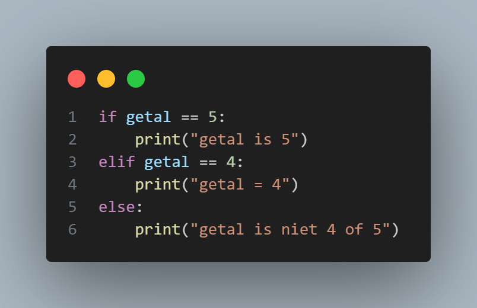
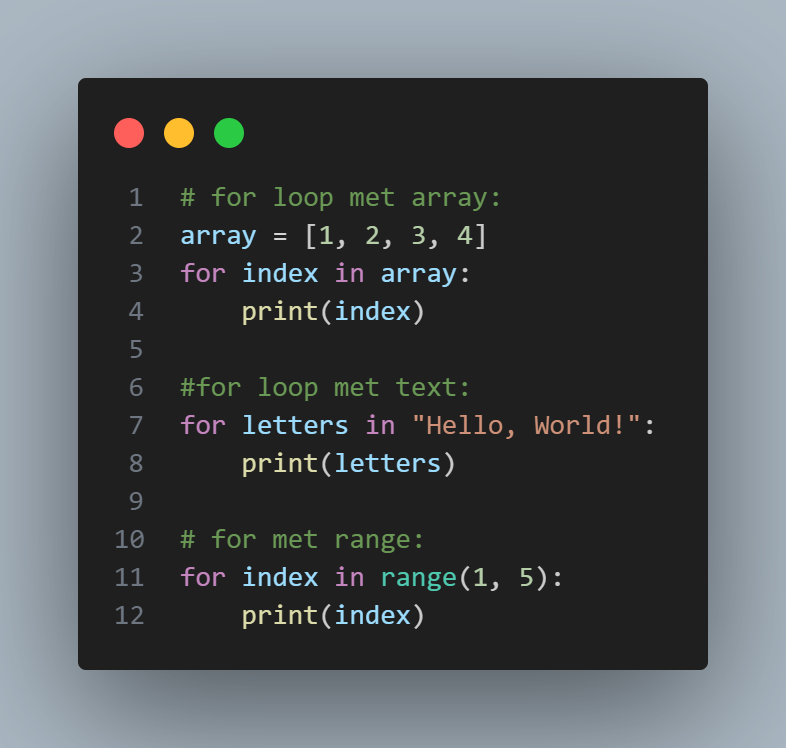
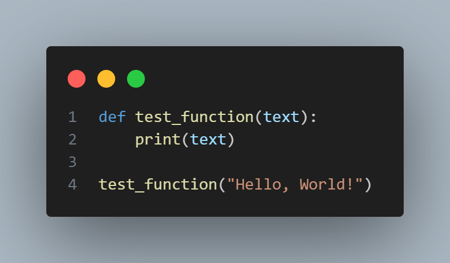

Python tutorial
In deze tutorial leer je de basis van python. Je leert variabelen, functies, loops en nog meer.
Wat is python?
Python is een programmeertaal, gemaakt in 1991 door de Nederlander Guido van Rossum. Hij ontwierp het bij het CWI in Amsterdam, geïnspireerd door de eenvoud van de taal ABC. De naam komt van zijn liefde voor de komedieserie Monty Python. Python is populair door zijn eenvoudige, leesbare code en veel toepassingen, zoals herontwikkeling, data-analyse en AI.
Benodigdheden:
- Python: Zorg ervoor dat je Python op je computer hebt geïnstalleerd. Je kunt het downloaden van de officiële website: python.org.
- Text editor: Een editor zoals VSCode, Sublime Text, of zelfs de windows ingebouwde text editor kladblok kun je python code mee schrijven.
Commentaar in python:
Commentaar in python doe je door een # neer te zetten en dan alles na de # in de code op dezelfde regel is commentaar.
Variabelen:
Er zijn meerdere types variabelen in python, allemaal hebben ze een andere Functie en kun je er andere dingen mee.
Maar hoe maak je een variabel aan? Dat is in python heep makkelijk, typt de naam die je wilt dat de variabel heeft en dan geef je de variabel een waarde door gewoon = te typen en dan wat je wilt dat de waarde is, een voorbeeld is dit: getal = 5, python kiest dan automatisch welk type het variabel moet zijn, hier is de uitleg van een paar van de types variabelen:
- Integer: Integer zijn getallen die geen kommagetal zijn, een integer maak je aan door de waarde van de variabel een getal te maken, een voorbeeld is dit:
getal = 5 - Float: Floats zijn getallen dat wel kommagetallen zijn, een float maak je aan door de waarde van de variabel een kommagetal te maken, een voorbeeld is dit:
kommagetal = 5.5, een kommagetal gebruikt een punt in plaats van een komma omdat komma's gebruikt wordt om waardes te schijden. - String: Een string is text, een string maak je aan door de waarde van de variabel in "" te zetten, een voorbeeld is dit:
text = "dit is een string" - Boolean: Een boolean is een waar of nietwaar, of dus in het engels een True of False, je maakt dan dus de waarde True of False, een voorbeeld is dit:
boolean = True - Array: Een array is een lijst met meerdere waardes van variabel er in, een array maak je aan door de waardes in [] te zetten, een voorbeeld is dit:
array = ["string", "string2"]je schijdt de waardes met een komma, de waardes hoeven niet allemaal hetzelfde te zijn en een niet presee een string, je kan alle types variabelen er in zetten. een array kan je ook waardes van aflezen, dat doe je met de variabel en dan de index van het item dat je wilt aflezen, bijvorrbeeldarray[0]hier lees je het eerste item af omdat een array bij 0 begint omdat een computer bij 0 begint met tellen, en een item weizigen werkt zo:array[0] = 5, hier maak je de eerste item 0.
Variabelen kun je ook van type veranderen door bijvoorbeeld dit te doen: text = str(5), hier maak je dus de integer een string.
Functies:
Functies kun je uitvoeren door de naam van de functie op te schrijven en dan haakjes er achter, hier zijn voorbeelden van de basis functies:
Print:
Met print kun je text laten zien in de terminal, dat is waar standaard al je output komt, print doe je zo: print("deze text wordt nu geprint"), je hebt ook variabelen printen door bijvoorbeeld dit te doen: print(getal), als we eerder getal de waarde 5 hebben gegeven dan komt er nu dus 5 in de terminal te staan, je kunt ook de uitkomst van berekeningen printen, dat ziet er zo uit in de code: print(5 + 5), dit zal dus 10 printen.
door kommas te gebruiken in je print kan je meerdere dingen printen, zoals dit: print("5 + 5 =", 5 + 5), je kunt ook + gebruiken in plaats van een komma maar dit zorg er dan dus voor dat er geen spatie tussen de verschilende dingen zit. je kan ook rekenen met strings, zoals dit: print("hoi"*5), dit zal hoi 5 keer achter elkaar zetten, dus het zou dit printen hoihoihoihoihoi. je kan ook nog een "\" gebruiken in een print als je daar dan achter bijvoorbeeld een "n"zou zetten zou hey een nieuwe regel starten, dat print je dan zo: print("dit is text\n en dit zou op de volgende regel staan")je hebt ook nog een "\t" dit print een tab.
input:
Met input() kan je input vragen aan de gebruiker, hier wacht dus het programma tot de gebruiker iets heeft ingevoerd, tussen de haakjes kan je ook wat vragen aan de gebruiken over wat je als input wilt, dit werkt hezelfde als bij print, hier is een voorbeeld: user_input = input(voer hier een input in:\t), een input is altijd een string, dus die moet je veranderen naar een int(integer) als je er mee wilt rekenen.
Ff en else:
If is niet heel moeilijk, een if doet iets als iets waar is, dan heb je een elif(else if) dat doet iets als wat in de if stont niet waar is maar wat in de elif wel waar is, en je hebt een else, else doet iets als beide niet waar is, else een elif is niet verplicht, het ziet er zo uit:
Om vergelijkingen te doen in de if kun je al deze dingen doen:
- Gelijk aan: ==
- Griter dan:>
- Kleiner dan:<
- Groter of gelijk aan:>=
- Kleiner of gelijk aan:<=
- Niet gelijk aan:!=
Je kunt ook meerdere vergelijkingen doen in 1 if, dat doe je met een and tussen de vergelijkingen te zetten, hier moeten beide vergelijkingen waar zijn, je kunt ook een orer tussen zetten, dan moet 1 van de 2(of meer) waar zijn. Nadat je de vergelijking heb gedaan doe je een dubbele punt en dan een regel, lager doe je een tab en alles wat een tab naar rechts is dat wordt uitgevoerdt door de (el)if.
Loops:
Je hebt in python 2 soorten loops, een while loop en een for loop, ze loopen beide maar beide doen ze we wat anders, hier is de uitleg voor beide:
- While loops: Een while loop herhaalt de code erin als de waarde waar is, het werkt eigenlijk als een if maar dan blijft het herhalen tot het niet meer waar is, en het heeft geen elif.
- For loops: For loops werken iets anders, for loops hebben een variabel er in en een andere variabel waar ze door heen gaan, de variabel in de for loop gaat veranderen elke keer naar de volgende waarde want een for loop gaat alleen door een array, maar in python is een string eigenlijk een array van letters en je kun ook range gebruiken wat dan een array van getallen maakt, dit is niet heel duidelijk maar hier zijn voorbeelden: 
Functies maken:
Een functie maken is eigenlijk een stuk code schrijven die je dan een naam geeft en dan later kan je die opvragen en dan voert python de code uit, je kunt ook variabelen meegeven aan de functie, hier is een voorbeeld:
Aan deze functie wordt de text "Hello, World!" mee gegeven en deze functie print dan die text, deze functie is dus niet heel handig want het is eigenlijk print, maar functies kan je dus ook voor veel complexere dingen die je dan maar 1 keer hoeft te schrijven en dan later zo vaak als nodig kan uitvoeren.
Ik hoop dat je nu de basis van python begrijpt en nu een paar dingen kan programeren in python en verder kan leren.